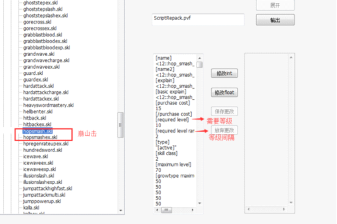
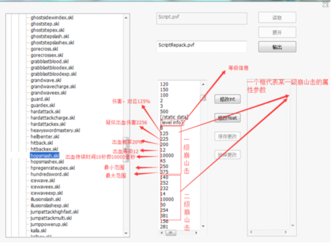

DNF技能PVF修改教程
DNF【技能PVF修改】
--转自台服DNF吧 海魂≮梦蝶≯


感谢这位大神的首发教程，这里补上不完整版的技能位置：
┌ 鬼剑士技能
├ skill_swordman_addwave 波动 - 魔法剑气
├ skill_swordman_atjackcatch 武器 - 万剑归宗的穿云剑
├ skill_swordman_blache 鬼神 - 狂暴的布拉修
├ skill_swordman_bladephantom 鬼神 - 幽魂剑影阵
├ skill_swordman_blastblood 血气 - 怒气爆发
├ skill_swordman_bloodboom 血气 - 浴血之怒
├ skill_swordman_bloodinkanet 血气 - 汲血之力
├ skill_swordman_bloodmarble 血气 - 魔煞血陨
├ skill_swordman_bloodriven 血气 - 血魔弑天
├ skill_swordman_bloodsword 血气 - 血气之刃
├ skill_swordman_bloodyrave 血气 - 噬魂封魔斩
├ skill_swordman_chargecrash 武器 - 破军升龙击
├ skill_swordman_darktoleranceup 鬼神 - 暗月降临
├ skill_swordman_dashattackmultihit 武器 - 连突刺
├ skill_swordman_descentsoul 鬼神 - 鬼神诏令
├ skill_swordman_epidemicrasa 鬼神 - 瘟疫之罗刹
├ skill_swordman_firewave 波动 - 极炎·裂波剑
├ skill_swordman_flame 波动 - 爆炎·波动剑
├ skill_swordman_flowmindone 武器 - 流心·刺
├ skill_swordman_flowmindpowerup 武器 - 流心·狂
├ skill_swordman_flowmindthree 武器 - 流心·升
├ skill_swordman_flowmindtwo 武器 - 流心·跃
├ skill_swordman_frenzy 血气 - 血之狂暴
├ skill_swordman_ghostsidewind 鬼神 - 鬼剑鞭
├ skill_swordman_ghoststep 鬼神 - 鬼影步
├ skill_swordman_giveblood 血气 - 嗜血
├ skill_swordman_gorecross 血气 - 十字斩
├ skill_swordman_grabblastblood 血气 - 嗜魂之手
├ skill_swordman_guard 武器 - 格挡
├ skill_swordman_handlingsword 武器 - 万剑归宗的御剑术
├ skill_swordman_hardattackcharge 鬼神 - 噬灵鬼斩
├ skill_swordman_hellbenter 血气 - 魔狱血刹
├ skill_swordman_hopsmash 血气 - 崩山击
├ skill_swordman_hundredsword 武器 - 极·鬼剑术（暴风式）
├ skill_swordman_illusionslash 武器 - 幻影剑舞
├ skill_swordman_indaramang 波动 - 天雷·波动剑
├ skill_swordman_indratian 波动 - 雷神之息
├ skill_swordman_jumpattackmulti 武器 - 空中连斩
├ skill_swordman_kalla 鬼神 - 冥炎之卡洛
├ skill_swordman_lightninggod 波动 - 雷神降世：裁决
├ skill_swordman_meteorsword 武器 - 极·神剑术 (流星落)
├ skill_swordman_momentaryslash 武器 - 拔刀斩
├ skill_swordman_outragebreak 血气 - 崩山裂地斩
├ skill_swordman_rapidmoveslash 武器 - 猛龙断空斩
├ skill_swordman_reflectguard 波动 - 鬼印珠
├ skill_swordman_shockwavearea 波动 - 邪光波动阵
├ skill_swordman_standalonewave 波动 - 无双波
├ skill_swordman_stateoflimit 武器 - 极·神剑术
├ skill_swordman_swordofmind 武器 - 极·神剑术 (破空斩)
├ skill_swordman_tripleslash 武器 - 三段斩
├ skill_swordman_triplestab 鬼神 - 鬼影三击剑
├ skill_swordman_vajra 波动 - 天雷·降魔杵
├ skill_swordman_vaneslash 波动 - 裂波斩
├ skill_swordman_waveeye 波动 - 暗天波动眼
├ skill_swordman_wavemark 波动 - 波动刻印
├ skill_swordman_wavespinarea 波动 - 不动明王阵
├ skill_swordman_weaponcombo 武器 - 里·鬼剑术
└ skill_swordman_zig 鬼神 - 王者号令：吉格降临
┌ 黑暗武士技能
├ skill_demonicswordsman
├ skill_demonicswordsman_blastblood 暗黑 - 暗劲爆发
├ skill_demonicswordsman_bloodsword 暗黑 - 破魂之刃
├ skill_demonicswordsman_bloodyrave 暗黑 - 灭魂封魔斩
├ skill_demonicswordsman_chargecrash 暗黑 - 暗影升龙击
├ skill_demonicswordsman_combostep 连招组合系统特效
├ skill_demonicswordsman_dark_hadouken 暗黑 - 邪影·波动剑
├ skill_demonicswordsman_flowmindone 暗黑 - 突刺
├ skill_demonicswordsman_flowmindtwo 暗黑 - 跃斩
├ skill_demonicswordsman_ghostsidewind 暗黑 - 暗影鞭
├ skill_demonicswordsman_ghoststepslash 暗黑 - 禁魂斩
├ skill_demonicswordsman_gorecross 暗黑 - 黑暗十字斩
├ skill_demonicswordsman_grabblastblood 暗黑 - 暗魂之手
├ skill_demonicswordsman_illusionslash 暗黑 - 魔影剑舞
├ skill_demonicswordsman_kalla 暗黑 - 冥炎破空斩
├ skill_demonicswordsman_momentaryslash 暗黑 - 破灭斩
├ skill_demonicswordsman_moonslash 暗黑 - 暗月斩
├ skill_demonicswordsman_outragebreak 暗黑 - 魔狱裂魂斩
├ skill_demonicswordsman_rapidmoveslash 暗黑 - 瞬影斩
├ skill_demonicswordsman_reflectguard 暗黑 - 冥魂珠
├ skill_demonicswordsman_shockwavearea 暗黑 - 凝魂波动阵
├ skill_demonicswordsman_tripleslash 暗黑 - 滑斩
├ skill_demonicswordsman_triplestab 暗黑 - 暗影三击剑
├ skill_demonicswordsman_vaneslash 暗黑 - 旋涡斩
└ skill_demonicswordsman_wavespinarea 暗黑 - 黑暗明王阵
-------------------------------------------------分割线-----------------------------------------------
┌ 男格斗家技能
├ skill_fighter_atblockbuster 狂暴 - 砖块投掷
├ skill_fighter_atclosepunch 武术 - 冲膝
├ skill_fighter_atcrashlowkick 武术 - 碎骨
├ skill_fighter_atcrazymount 念气 - 念兽：猛虎震地
├ skill_fighter_atdashafterdash 体术 - 野蛮冲撞
├ skill_fighter_atdashpunch 武术 - 肘击
├ skill_fighter_atdefinitegrab 体术 - 暴力抓取
├ skill_fighter_atdestroyearthskydrop 狂暴 - 天崩地裂
├ skill_fighter_atearthbreak 体术 - 金刚碎
├ skill_fighter_atenchantpoison 狂暴 - 毒瓶投掷
├ skill_fighter_atenergyball 念气 - 念气波
├ skill_fighter_atenergyfield 念气 - 螺旋念气场
├ skill_fighter_atfastdash 狂暴 - 瞬步
├ skill_fighter_atflamelegs 武术 - 烈焰焚步
├ skill_fighter_atgrabexplosion 武术 - 擒月炎
├ skill_fighter_atgroundkick 狂暴 - 螺旋滑铲
├ skill_fighter_athiddensting 狂暴 - 毒针投掷
├ skill_fighter_atholdup 体术 - 雷霆旋踢
├ skill_fighter_atillusion 体术 - 分身
├ skill_fighter_atjumpsuplex 体术 - 空中抓取
├ skill_fighter_atjunkspin 狂暴 - 血色风暴
├ skill_fighter_atlegsuplex 体术 - 浮空凌云踢
├ skill_fighter_atlightningdance 武术 - 闪电之舞
├ skill_fighter_atlightningdragon 念气 - 念兽：猛虎震地
├ skill_fighter_atnenflower 念气 - 念兽：审判之金雷虎
├ skill_fighter_atnenmonster 念气 - 念兽：龙虎啸
├ skill_fighter_atpunchafterreturn 体术 - 折颈
├ skill_fighter_atrandomkick 武术 - 瞬影连环踢
├ skill_fighter_atrisingupper 武术 - 炽焰旋风腿
├ skill_fighter_atroarstun 念气 - 狮子吼
├ skill_fighter_atshouldercharge 武术 - 铁山靠
├ skill_fighter_atsinglekick 武术 - 上踢
├ skill_fighter_atspire 体术 - 浮空凌云踢
├ skill_fighter_atstomp 武术 - 鹰踏
├ skill_fighter_atsuplex 体术 - 膝击
├ skill_fighter_atsuplexcyclone 体术 - 地狱风火轮
├ skill_fighter_atthrowenemy 体术 - 抛投
├ skill_fighter_atthrowweb 狂暴 - 罗网投掷
├ skill_fighter_attyphoon 体术 - 死亡旋律
├ skill_fighter_atvenommine 狂暴 - 毒雷引爆
├ skill_fighter_atwhirlwindkick 武术 - 旋风踢
└ skill_fighter_atwildcannonspike 体术 - 裂石破天
┌ 女格斗家技能
├ skill_fighter_chaindestruction 武术 - 圣武连环破
├ skill_fighter_closepunch 武术 - 寸拳
├ skill_fighter_crashlowkick 武术 - 碎骨
├ skill_fighter_dashafterdash 武术 - 疾风连击
├ skill_fighter_dragonmine 狂暴 - 毒龙轰天雷
├ skill_fighter_earthbreak 体术 - 金刚碎
├ skill_fighter_energyball 念气 - 念气波
├ skill_fighter_energyfield 念气 - 螺旋念气场
├ skill_fighter_finalheaven 体术 - 风暴之舞
├ skill_fighter_giantswing 体术 - 末日摇篮
├ skill_fighter_groundkick 狂暴 - 裂地飞沙
├ skill_fighter_hurricanesp 苍宇彗星落
├ skill_fighter_inhaledenergyshot 念气 - 聚能念气炮
├ skill_fighter_jumpsuplex 体术 - 霹雳肘击
├ skill_fighter_junkspin 狂暴 - 街头风暴
├ skill_fighter_lightningdance 散打 - 闪电之舞
├ skill_fighter_lightningdragon 念气 - 念兽：雷龙出海
├ skill_fighter_muscleshift 散打 - 柔化肌肉
├ skill_fighter_nencharge 念气 - 念之奥义
├ skill_fighter_nenflower 念气 - 千莲怒放
├ skill_fighter_nenmonster_whitetiger 念气 - 念兽：龙虎啸
├ skill_fighter_nenofbrilliance 念气 - 念帝旋天破
├ skill_fighter_nenshield 念气 - 念气罩
├ skill_fighter_poisonmist 狂暴 - 死亡毒雾
├ skill_fighter_poisonexplosion 狂暴 - 连环毒爆弹
├ skill_fighter_poisonsnake 狂暴 - 万毒噬心诀
├ skill_fighter_powerupondash 武术 - 武神步
├ skill_fighter_punchafterreturn 体术 - 折颈
├ skill_fighter_randomkick 武术 - 纷影连环踢
├ skill_fighter_risingupper 武术 - 升龙拳
├ skill_fighter_saintillusion 念气 - 奇袭幻影
├ skill_fighter_shouldercharge 武术 - 铁山靠
├ skill_fighter_singlekick 武术 - 上踢
├ skill_fighter_stomp 武术 - 鹰踏
├ skill_fighter_strongestlowkick 武术 - 武神强踢
├ skill_fighter_suplexcyclone 体术 - 地狱摇篮
├ skill_fighter_suplexsubpowerup 体术 - 背摔强化
├ skill_fighter_throwenemy 体术 - 抛投
├ skill_fighter_tigerstrike 武术 - 虎啸神拳
├ skill_fighter_torbellino 武术 - 极武霸皇拳
├ skill_fighter_typhoon 体术 - 末日风暴
├ skill_fighter_venommine 狂暴 - 毒雷引爆
└ skill_fighter_wildcannonspike 体术 - 裂石破天
┌ EX技能
├ skill_fighter_at108stairsex 狂暴 - 武莲华
├ skill_fighter_atchainkick 武术 - 霹雳三重踢
├ skill_fighter_atchargespear 体术 - 彗星冲击
├ skill_fighter_atcrashrope 狂暴 - 千丝乱舞
├ skill_fighter_atglueyfruitthrow 狂暴 - 爆破黏球
├ skill_fighter_athurricanespear 武术 - 旋风碎心踢
├ skill_fighter_atnenspear 念气 - 念之战矛
├ skill_fighter_atspiralcolumnex 念气 - 冲云念气场
├ skill_fighter_blockbusterex 狂暴 - 爆碎砖袭
├ skill_fighter_dashpunchex 武术 - 破碎拳
├ skill_fighter_grabexplosionex 狂暴 - 狂毒擒月炎
├ skill_fighter_legsuplexex 体术 - 空绞连锤
├ skill_fighter_nenguardex 气功 - 究极念气罩
├ skill_fighter_risingupperex 武术 - 升龙霸
├ skill_fighter_roarstunex 气功 - 狂狮怒吼
└ skill_fighter_suplexcycloneex 体术 - 死亡摇篮
-------------------------------------------------分割线-----------------------------------------------
┌ 神枪手技能
├ skill_gunner_bullet_exs 机械 - 毒蛇炮
├ skill_gunner_c4remote 战术 - C4远程炸弹
├ skill_gunner_cannonball 大枪 - 加农炮
├ skill_gunner_countershoot 花式 - 复仇反击
├ skill_gunner_doublegunhawk 花式 - 双鹰回旋
├ skill_gunner_dropbomblight 大枪 - 量子爆弹
├ skill_gunner_extruder 大枪 - X-1压缩量子炮
├ skill_gunner_fastshoot 花式 - 膝撞
├ skill_gunner_flamethrower 大枪 - M-3喷火器
├ skill_gunner_flamethrowerboost 大枪 - 聚焦喷火器
├ skill_gunner_flashmine 战术 - 闪光地雷
├ skill_gunner_fm-31 大枪 - FM-31榴弹发射器
├ skill_gunner_g1 机械 - G-1科罗纳
├ skill_gunner_g2 机械 - G-2旋雷者
├ skill_gunner_g3 机械 - G-3捕食者
├ skill_gunner_grenade 战术 - 手雷
├ skill_gunner_laserriflecharge 大枪 - 激光炮
├ skill_gunner_markofdeath 花式 - 死亡标记
├ skill_gunner_multiheadshot 花式 - 多重爆头
├ skill_gunner_nielsniping 战术 - 尼尔狙击
├ skill_gunner_shooteffect 其他 - 射击效果
├ skill_gunner_shootcrossshot 战术 - 散弹枪
├ skill_gunner_shootrandomshoot 花式 - 乱射/枪舞
├ skill_gunner_sparrowfactory 机械 - 拦截机工厂
├ skill_gunner_steyrheavyrifle 大枪 - 反坦克炮
├ skill_gunner_subweapon 大枪 - 重火器
├ skill_gunner_tread 花式 - 踏射
├ skill_gunner_walkshoot 花式 - 移动射击
├ skill_gunner_exs 机械 - Ex-S毒蛇炮
├ skill_gunner_ez8 机械 - EZ-8自爆者
├ skill_gunner_fightingspirit 机械 - 斗志之歌
├ skill_gunner_firerx78 机械 - 红色破坏者
├ skill_gunner_headingrx78 机械 - 钢铁机器人
├ skill_gunner_healrx78 机械 - 修复者格莱/神力雷克斯
└ skill_gunner_rx78 机械 - RX-78追击者
┌ 男枪手技能
├ skill_gunner_blackrose 战术 - 黑玫瑰战队
├ skill_gunner_desperado 花式 - 疯狂屠戳
├ skill_gunner_gaebolgpunch 机械 - 盖波加之拳
├ skill_gunner_hitsuddendeath 花式 - 致死
├ skill_gunner_radarstuckdown 大枪 - 卫星定位
├ skill_gunner_redrose 战术 - 玫瑰军团
├ skill_gunner_satelaser 大枪 - 卫星射线
├ skill_gunner_stinger 大枪 - FM-92刺弹炮
└ skill_gunner_tempester 机械 - 空战机械：风暴
┌ 女枪手技能
├ skill_gunner_ancienttrigger 大枪 - 远古粒子炮
├ skill_gunner_atnapalmbomb 战术 - 光子爆弹
├ skill_gunner_atstinger 大枪 - FM-92 mk2榴弹
├ skill_gunner_attwingunblade 花式 - 双枪极舞刀
├ skill_gunner_empstorm 机械 - EMP磁暴
├ skill_gunner_g0 机械 - G-0战争领主
├ skill_gunner_veiledcut 花式 - 隐匿切割
└ skill_gunner_tempesterat 机械 - 空战机械：狂风
┌ EX技能
├ skill_gunner_airraidex 花式 - 回旋劫击、炽焰劫击
├ skill_gunner_blizzardthrowerboost 大枪 - 寒冰喷射器
├ skill_gunner_c4ex 战术 - C4飞速炸弹
├ skill_gunner_ez8ex 机械 - Ez-10反击者
├ skill_gunner_flashmineex 战术 - M-16地雷
├ skill_gunner_multiheadshotex 花式 - 极限多重爆头
└ skill_gunner_stingerex 大枪 - FM-92
-------------------------------------------------分割线-----------------------------------------------
┌ 男法师技能
├ skill_mage_atattack 通用 - 魔法球
├ skill_mage_atbluedragonwill 冰冻 - 冰魄锤击
├ skill_mage_atbrokenarrow 冰冻 - 冰魄之弓
├ skill_mage_atchainlightning 爆破 - 雷光链
├ skill_mage_atconcentrate 爆破 - 元素浓缩球
├ skill_mage_atdarknessmantle 爆破 - 黑暗禁域
├ skill_mage_atdiehard 通用 - 不死之身
├ skill_mage_atelementalbuster 爆破 - 幻魔四重奏
├ skill_mage_atelementalchange 爆破 - 属性变换
├ skill_mage_atelementalrain 爆破 - 元素轰炸
├ skill_mage_atfallenblossoms 冰冻 - 寒冰连枪
├ skill_mage_atfirepillar 通用 - 旋火盾
├ skill_mage_atfireroad 爆破 - 地炎
├ skill_mage_atflamecircle 爆破 - 旋炎破
├ skill_mage_atfrozenland 冰冻 - 冰龙旋舞
├ skill_mage_atholonglight 通用 - 幽冥火
├ skill_mage_aticearea 爆破 - 冰晶之浴
├ skill_mage_aticechakram 冰冻 - 千旋冰轮破
├ skill_mage_aticecrash 冰冻 - 旋冰穿刺
├ skill_mage_aticeelementalattack 冰冻 - 冰之印
├ skill_mage_aticefieldex 冰冻 - 千里冰封
├ skill_mage_aticeman 冰冻 - 极冰绽放
├ skill_mage_aticeorb 冰冻 - 冰凌破
├ skill_mage_aticeroad 冰冻 - 冰霜之径
├ skill_mage_atlightningwall 爆破 - 雷光屏障
├ skill_mage_atmanaburst 爆破 - 魔力燃烧
├ skill_mage_atpieceofice 冰冻 - 破冰飞刃
├ skill_mage_atpush 通用 - 擒拿掌
├ skill_mage_atresonance 冰冻 - 寒冰之境
├ skill_mage_atteleport 通用 - 瞬移
├ skill_mage_attundrasoul 冰冻 - 冰冻空间
├ skill_mage_atturnwindmill 冰冻 - 冰魄旋枪
├ skill_mage_atwatercannon 通用 - 魔法冰球
├ skill_mage_atwindstrike 通用 - 魔法旋风
├ skill_mage_crystalattack 冰冻 - 冰晶坠
├ skill_mage_darkchange 爆破 - 暗域扩张
├ skill_mage_icesword 冰冻 - 冰魄剑
├ skill_mage_magiccannon 爆破 - 魔法炮
└ skill_mage_magicshield 爆破 - 元素环绕
┌ 魔法师技能
├ skill_mage 魔道 - 驱散魔法
├ skill_mage_acidcloud 魔道 - 魔道酸雨云
├ skill_mage_antigravity 魔道 - 反重力装置
├ skill_mage_aurashield 战斗 - 魔法盾
├ skill_mage_bellatrix 战斗 - 贝亚娜斗神
├ skill_mage_blackhole 元素 - 黑洞
├ skill_mage_blackmantle 魔道 - 暗影斗篷
├ skill_mage_broomspin 魔道 - 旋转扫把
├ skill_mage_doubleswing 战斗 - 双重锤击
├ skill_mage_dragonspear 战斗 - 煌龙偃月
├ skill_mage_elementalchain 元素 - 元素点燃
├ skill_mage_elementalshower 元素 - 阿斯特雷风暴
├ skill_mage_enhancedmagicmissile 魔道 - 改良星星弹
├ skill_mage_familiar_blackcat 魔道 - 亲和暗影夜猫
├ skill_mage_familiar_fluorescent 魔道 - 亲和光电鳗
├ skill_mage_familiar_jackfrost 魔道 - 亲和冰霜雪人
├ skill_mage_familiar_jol 魔道 - 亲和杰克南瓜
├ skill_mage_flamestrike 元素 - 烈焰冲击
├ skill_mage_fluorecollider 魔道 - 电鳗碰撞机
├ skill_mage_fusioncraft 魔道 - 技艺融合
├ skill_mage_fusionchaser 战斗 - 炫纹融合
├ skill_mage_heatingfurnace 魔道 - 暴炎加热炉
├ skill_mage_icefield 元素 - 极冰盛宴
├ skill_mage_lavapotion 魔道 - 熔岩药瓶
├ skill_mage_megadrill 魔道 - 冰霜钻孔车
├ skill_mage_pokethrow 战斗 - 圆舞棍
├ skill_mage_powder 魔道 - 寒冰粉和猛毒粉
├ skill_mage_randompiercestrike 战斗 - 流星闪影击
├ skill_mage_sacrificespirit 召唤 - 精灵献祭
├ skill_mage_shururu 魔道 - 南瓜舒露露
├ skill_mage_strengthhandstrike 战斗 - 强袭流星打
├ skill_mage_successpremonition 魔道 - 成功预感
├ skill_mage_summonmonsteraura 召唤 - 召唤光环
├ skill_mage_summonmonsterreckless 召唤 - 召唤兽狂化
├ skill_mage_sweetcandybar 魔道 - 幸运棒棒糖
├ skill_mage_targetit 召唤 - 魔力印记
├ skill_mage_thunderstrike 元素 - 天雷
├ skill_mage_transformflapper 魔道 - 苍蝇拍
├ skill_mage_unsummonmonster 召唤 - 解除召唤
├ skill_mage_wallofice 元素 - 冰墙
├ skill_mage_casillas 召唤 - 卡西亚斯
├ skill_mage_monsterflower 召唤 - 魔界花袄索
├ skill_mage_spikeking 召唤 - 精灵王
┌ 缔造者
├ skill_mage_creatorfirehurricane 烈焰飓风
├ skill_mage_creatorfiremeteo 炽炎星陨
├ skill_mage_creatorfirewall 烈火燎原
├ skill_mage_creatoriceplate 冰天震地
├ skill_mage_creatoricerock 冰霜之球
├ skill_mage_creatoriceshield 极冰护盾
├ skill_mage_creatoricewoodfence 树之屏障
├ skill_mage_creatormodechange 元素转换
├ skill_mage_creatorwindpress 超能旋风波
├ skill_mage_creatorwindstorm 风暴漩涡
└ skill_mage_magicsphere 鼠标手势
┌ EX技能
├ skill_mage_broomspinex 魔道 - 弹跳旋转扫把
├ skill_mage_disenchant 元素 - 光电冰墙
├ skill_mage_flamevolcanovoid 元素 - 虚无火山
├ skill_mage_randompiercestrikeex 战斗 - 流星雷连击
├ skill_mage_swingex 战斗 - 炫纹碎霸
├ skill_mage_transformflapperex 魔道 - 超级苍蝇拍
└ skill_mage_walloficeex 元素 - 光电冰墙
-------------------------------------------------分割线-----------------------------------------------
┌ 大叔技能
├ skill_priest_antiairupper 驱魔 - 空斩打
├ skill_priest_apocalypse 启示 - 天启之珠
├ skill_priest_atomicsmash 驱魔 - 无双击
├ skill_priest_avengerawakening 恶魔 - 末日审判者
├ skill_priest_avengerawakening_attack 恶魔 - 审判者的恶魔之爪
├ skill_priest_baekho 驱魔 - 式神·白虎
├ skill_priest_battleauramastery 神击 - 普通攻击拳气
├ skill_priest_battleaxemastery 驱魔 - 斧头精通
├ skill_priest_bigbangpunch 神击 - 泯灭神击
├ skill_priest_bladeofpurewhite 启示 - 纯白之刃
├ skill_priest_bless 启示 - 天使祝福
├ skill_priest_bluedragon 驱魔 - 苍龙逐日
├ skill_priest_chakraofcalmness 驱魔 - 脉轮·圣光和寒冰
├ skill_priest_chakraofpassion 驱魔 - 脉轮·烈焰
├ skill_priest_changehptomp 恶魔 - 化魔
├ skill_priest_choppinghammer 神击 - 破碎之锤
├ skill_priest_darkstrike 驱魔 - 黑暗切割
├ skill_priest_deflectwall 启示 - 圣光沁盾
├ skill_priest_divinecrush 神击 - 圣拳锤击
├ skill_priest_divinelight 启示 - 圣光守护
├ skill_priest_earthquake 恶魔 - 裂地锤
├ skill_priest_emblemofsafeguard 启示 - 守护纹章
├ skill_priest_enteringnirvana 驱魔 - 破魔符
├ skill_priest_fallingsoul 恶魔 - 堕落之魂
├ skill_priest_fastmove 恶魔 - 厄运之轮
├ skill_priest_flashglobe 启示 - 圣光球
├ skill_priest_fountainoflife 启示 - 生命源泉
├ skill_priest_galesmash 驱魔 - 疾风打
├ skill_priest_giantswing 驱魔 - 疾空旋风破
├ skill_priest_gloriousbless 启示 - 荣誉祝福
├ skill_priest_gorgeouscombination 神击 - 圣拳连击
├ skill_priest_grasphandofanger 恶魔 - 恶魔之手
├ skill_priest_hammerofcontrition 启示 - 忏悔之锤
├ skill_priest_healwind 启示 - 圣愈之风
├ skill_priest_heavenlycombination 神击 - 神圣组合拳
├ skill_priest_hedgehog 恶魔 - 复仇之刺
├ skill_priest_highspeedslash 恶魔 - 死亡切割
├ skill_priest_homerun 驱魔 - 星落打
├ skill_priest_hotcross 启示 - 圣光十字
├ skill_priest_hpmaxupparty 启示 - 天堂谐音
├ skill_priest_hpmaxuppersonal 启示 - 天籁之音
├ skill_priest_hurricaneroll 神击 - 极速飓风拳
├ skill_priest_hyunmoo 驱魔 - 式神·玄武
├ skill_priest_judgement 启示 - 正义审判
├ skill_priest_machinegunjab 神击 - 刺拳猛击
├ skill_priest_oppressiontalisman 驱魔 - 压制符
├ skill_priest_oxcrash 驱魔 - 断空锤击
├ skill_priest_pandemonium 恶魔 - 地狱之门
├ skill_priest_powerofdarkness 恶魔 - 黑暗权能
├ skill_priest_quakearea 驱魔 - 落凤锤
├ skill_priest_repeatedsmash 驱魔 - 狂乱锤击
├ skill_priest_revengeoflight 启示 - 光之复仇
├ skill_priest_ripper 恶魔 - 黑暗之触
├ skill_priest_risingarea 驱魔 - 升天阵
├ skill_priest_sacrificeofsoul 启示 - 灵魂牺牲
├ skill_priest_scythemastery 驱魔 - 镰刀精通
├ skill_priest_shadowboxer 神击 - 幻影分身
├ skill_priest_shikigami 驱魔 - 式神·殇
├ skill_priest_sidewind 神击 - 瞬拳
├ skill_priest_slowheal 启示 - 缓慢愈合
├ skill_priest_smasher 神击 - 虎袭
├ skill_priest_spearofvictory 启示 - 胜利之矛
├ skill_priest_spincutter 恶魔 - 回旋之镰
├ skill_priest_striking 启示 - 武器祝福
├ skill_priest_throwweapon 驱魔 - 巨旋风
├ skill_priest_thunderbolttalisman 驱魔 - 落雷符
├ skill_priest_vermilionbirdtalisman 驱魔 - 朱雀符
└ skill_priest_willdriver 神击 - 意念驱动
┌ EX技能
├ skill_priest_deflectwallex 启示 - 双子沁盾
├ skill_priest_flashglobeex 启示 - 圣光琉璃碎
├ skill_priest_heavenlycombinationex 神击 - 破魂组合拳
├ skill_priest_hyunmooex 驱魔 - 式神·真玄武
├ skill_priest_machinegunjabex 神击 - 刺拳狂击
└ skill_priest_repeatedsmashex 驱魔 - 狂暴锤击
-------------------------------------------------分割线-----------------------------------------------
┌ 暗夜使者技能
├ skill_thief_ambitionofballacre 死灵 - 巴拉克的野心
├ skill_thief_anklecut 暗杀 - 碎踝
├ skill_thief_ballacre 死灵 - 降临：暴君巴拉克
├ skill_thief_blackarea 死灵 - 暗影蛛丝阵
├ skill_thief_blackwave 死灵 - 吸魂暗劲波
├ skill_thief_blameofdead 死灵 - 死灵之怨
├ skill_thief_boneshield 死灵 - 骨盾
├ skill_thief_cursespear 死灵 - 诅咒之箭
├ skill_thief_darklure 死灵 - 百鬼夜行
├ skill_thief_darknail 死灵 - 死亡之爪
├ skill_thief_darkritual 死灵 - 暗黑仪式
├ skill_thief_darksoul 死灵 - 暗魂波
├ skill_thief_doublepierce 迅捷 - 双刃穿刺
├ skill_thief_excelstrikeadd 迅捷 - 雷光刃影
├ skill_thief_flyingsquirrel 忍法：飞鼠
├ skill_thief_guillotine 死灵 - 巴拉克的愤怒
├ skill_thief_hurricane 迅捷 - 剑刃风暴
├ skill_thief_nicolaszombie 死灵 - 驱使僵尸
├ skill_thief_phantomstrom 死灵 - 千魂祭
├ skill_thief_silverstream 迅捷 - 月轮舞
├ skill_thief_skintakeoff 忍术 - 忍法：影分身
├ skill_thief_sonicassault 迅捷 - 疾风乱舞
├ skill_thief_sworddance 迅捷 - 旋舞斩
├ skill_thief_throwknife 忍术 - 手里剑
├ skill_thief_verticalspiral 迅捷 - 螺旋穿刺
└ skill_thief_ui 尼古拉斯的行动模式
┌ EX技能
├ skill_thief_blackareaex 死灵 - 死灵之缚
├ skill_thief_blackwaveex 死灵 - 释魂暗劲波
├ skill_thief_blameofdeadex 死灵 - 死灵之缚
├ skill_thief_chainsawex 迅捷 - 陨落螺旋刺
└ skill_thief_verticalspiralex 迅捷 - 旋刃冲击